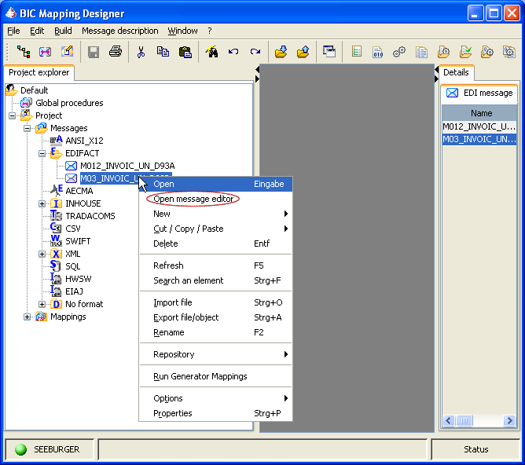
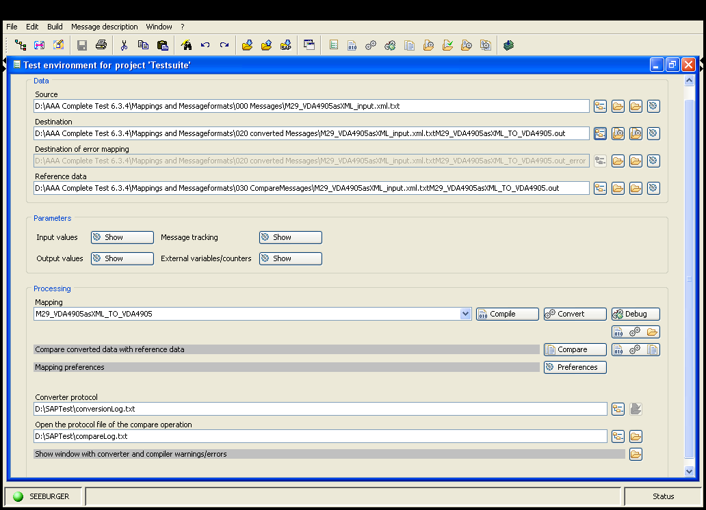

Previous
Previous  Table of Contents
Table of Contents 

BIC MD GUI - Message Editor
The benefit of the message editor is that you always have pairs with field = value and therefor don't need to count characters to reach the right position within a file. |
{kind=link}
The Message Editor allows it to visualize and to edit the structure of message (-data). The terms message and message format must be separated from each other; one of the main features of the BIC Mapping Designer is to show and to modify the structure of a valid message format, but the Message Editor is especially tailored to treat finally the messages which have to fit to those message formats.
Aside from visualization, the possibility to modify or create a message is the main benefit of the Message Editor. Every change is checked against the corresponding message format so that only valid messages may be assembled.
The Message Editor can be called through a right click on a message format node. This will open the context menu, where the entry Open message editor should be selected.
|  |
| BIC Mapping Designer |
{kind=link}
This will open a File chooser, which allows to select a message anywhere in the file system. A message and a message format are necessary together to start the Message Editor.
A Configuration dialog is opened after the File chooser, in the most cases, you only have to confirm the preselected standard assumptions in it. Detailed settings can be made in regard to how messages are read into the memory and written out onto the file system. Please refer to the section .
The second possibility to start the Message Editor is through a selected mapping in the Test Environment. Input-, output- and reference files are messages, and have fit to the source and destination message format of this mapping. The right outer button besides each text field containing the message file name and path on the file system allows here further the .
|  |
| Test environment |
{kind=link}
All buttons to open the message (files) can be configured so that favorite editors are associated with them. Usually the Message Editor will be opened with the second button - right of the file browser - and the third button (for an alternative editor) is associated with a more simple editor, e. g. Notepad, to enable also a quick view on the plain file. The link between the buttons and the editors can be configured through the editors preference page.
Nearly all operations which can be done with the Message Editor are started through a right-click on a tree node so that the context menu opens. For details please refer to the topic .